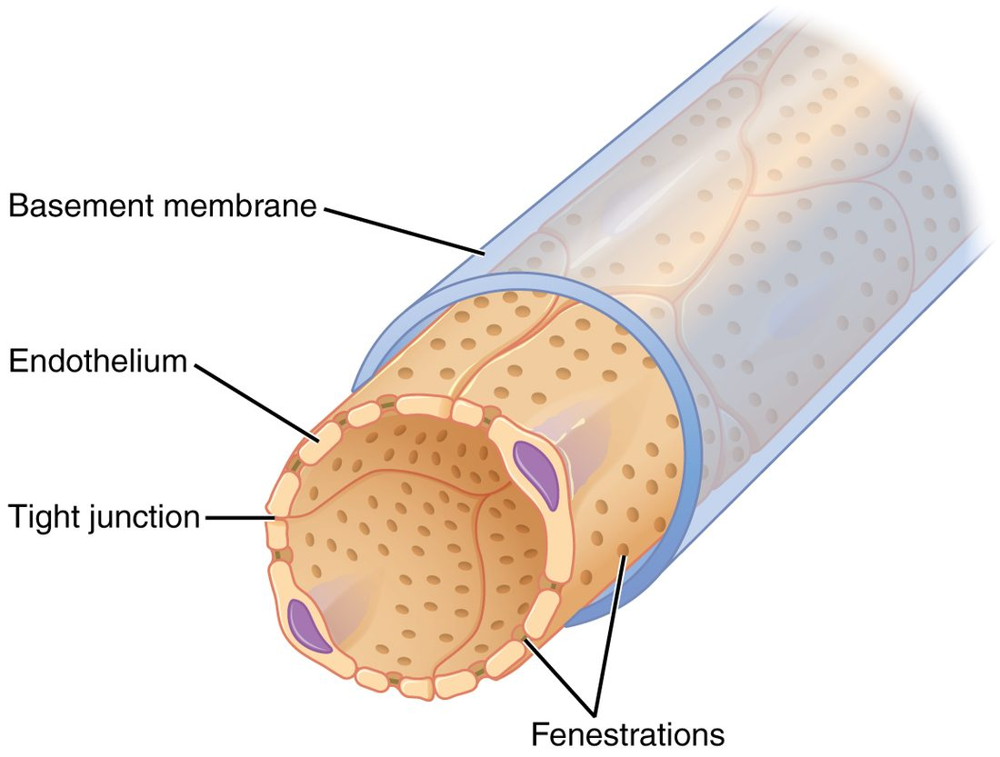
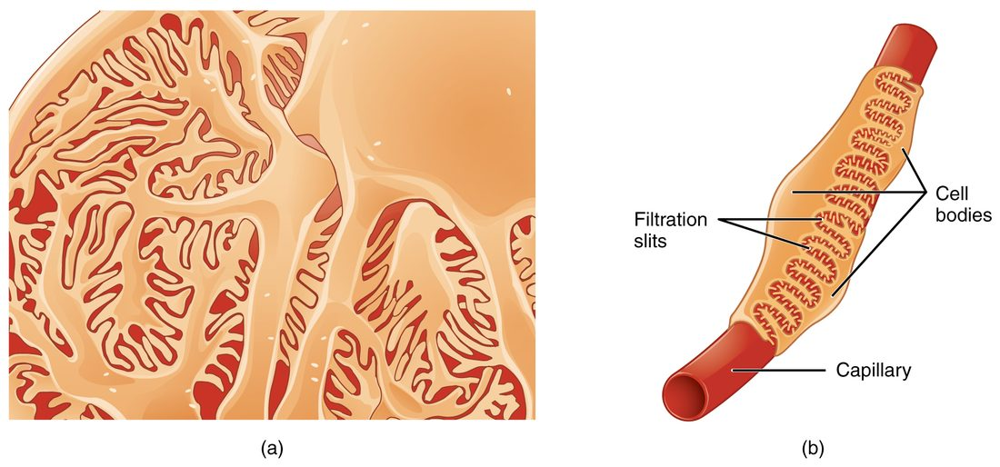

Glomerular filtration is the first step in making urine: blood pressure pushes plasma fluid out of the glomerular capillaries into the capsule of each nephron. This page explains the filter itself, the pressures that drive fluid through it, and how to calculate net filtration pressure and the glomerular filtration rate (GFR) step by step. It then shows how your kidneys hold GFR steady when blood pressure changes, how nerves and hormones override that when they need to, and what it means when protein or blood appears in the filtered fluid.
A lot of fluid, filtered fast
Start with numbers. You have about 3 liters of plasma. Your kidneys filter about 180 liters of fluid out of it every day. That means your whole plasma volume passes through the filter about 60 times a day, once every 25 minutes or so. Yet you pass only 1 to 2 liters of urine. The tubules take back more than 99 percent of what the glomeruli filter.
That arrangement looks wasteful, but it has a payoff. Anything that is not specifically taken back is lost in the urine, so wastes, excess ions and many drugs are cleared from the plasma many times a day, without the kidney needing a separate way to recognize each one. The price is that the filter has to be fast, and the tubules have to be very good at taking back what you need.
The fluid in the capsular space is called glomerular filtrate. It is plasma without its cells and almost all of its proteins. The rest of this page is about what sets how much of it you make.
The filtration membrane
Between the blood in a glomerular capillary and the capsular space lie three layers stacked one on another. Together they form the filtration membrane (Figure 1). From the blood side outward:
- Fenestrated endothelium. The capillary's endothelial cells are riddled with fenestrations (fenestra = window), round pores about 70 to 100 nm across (Figure 2). They are far too large to hold back any dissolved molecule. What they block is blood cells.
- Glomerular basement membrane. You met the basement membrane under every epithelium. Here, the basement membranes of the endothelium and the podocytes are fused into one unusually thick sheet, a mesh of collagen and other proteins that carries many negative charges. It holds back large proteins.
- Podocyte layer. The podocytes' smallest branches, called pedicels (ped- = foot, -icel = small), interlock around each capillary like the teeth of a zipper (Figure 3). The narrow gaps between neighboring pedicels, about 25 to 40 nm wide, are the filtration slits. Each slit is bridged by a thin protein sheet, the slit diaphragm, which is the finest sieve of the three.


What gets through
The filter sorts mainly by size, with shape and charge adding to it:
| Passes freely | Held back almost entirely | |
|---|---|---|
| Examples | Water, sodium, potassium, chloride, bicarbonate, glucose, amino acids, urea, vitamins, many drugs | Red and white blood cells, platelets, albumin, antibodies and other large plasma proteins |
| Size | Small molecules, up to about the size of a small protein like insulin | Albumin and anything larger |
| Concentration in the filtrate | About the same as in plasma | Near zero |
| What stops the rest | Nothing | Endothelium for cells; basement membrane and slit diaphragms for proteins |
Albumin sits right at the edge of the filter's size limit, and it also carries a negative charge, which the negatively charged basement membrane tends to repel. A small amount still gets through, and the proximal tubule takes it back, so almost none normally reaches the urine. How much the charge matters, compared with size, is still debated; size is clearly the main barrier.
Two consequences follow. Because small solutes pass freely, the glomerular filtrate has almost the same concentration of glucose, sodium and urea as plasma. And because proteins stay behind, the plasma left in the glomerular capillaries becomes more concentrated in protein as filtrate leaves it.
Pressures at the glomerulus
You met the Starling forces in capillary exchange. The same kinds of force act at the glomerulus, but with very different values (Figure 4). These are the pressures at the glomerulus:
- Glomerular hydrostatic pressure (also called glomerular blood hydrostatic pressure, GBHP): the blood pressure inside the glomerular capillaries, about 55 mm Hg. It pushes fluid out, into the capsule. It is much higher than the 35 mm Hg or so at the start of a typical capillary because the glomerulus drains into the efferent arteriole, a resistance vessel, and because the afferent arteriole is short and wide.
- Capsular hydrostatic pressure (CHP here means the capsule, not the capillary): the pressure of the filtrate already in the capsule and tubule, about 15 mm Hg. Fluid has to flow on through the whole tubule, and that resistance backs pressure up into the capsule. It pushes fluid back into the capillaries.
- Blood colloid osmotic pressure (BCOP): the oncotic pull of the plasma proteins, which pulls fluid back into the capillaries. It is about 25 mm Hg as blood enters the glomerulus, like anywhere else. As protein-free fluid leaves, the proteins left behind become more concentrated, and BCOP rises to about 35 mm Hg at the efferent end. The average, about 30 mm Hg, is the number used in calculations.
- Capsular colloid osmotic pressure: the oncotic pull of proteins in the filtrate. With almost no protein in the filtrate, it is about zero.

| Glomerular capillaries | Typical systemic capillaries | |
|---|---|---|
| Hydrostatic pressure inside | About 55 mm Hg, nearly the same along the whole length | About 35 mm Hg, falling to about 15 mm Hg |
| Vessel downstream | Efferent arteriole (high resistance) | Venule (low resistance) |
| Wall | Fenestrated endothelium, thick basement membrane, podocytes | Usually continuous endothelium |
| Oncotic pull along the capillary | Rises from about 25 to 35 mm Hg as filtrate leaves | Stays nearly constant, about 25 mm Hg |
| Direction of fluid movement | Filtration along the whole length | Filtration, brisk at first and slowing along the length |
| Fluid filtered per day | About 180 L, into the tubules | Several liters, into the interstitial fluid, returned by lymph |
Net filtration pressure at the glomerulus
The net filtration pressure at the glomerulus (NFP) is the pressure pushing fluid out minus the pressures pushing it back:
NFP = GBHP − (CHP + BCOP)
This is the same equation you used in capillary exchange, with the capsule in place of the interstitial fluid. The capsular colloid osmotic pressure is left out because it is about zero.
Worked example 1: net filtration pressure in a healthy kidney
Problem. GBHP = 55 mm Hg, CHP = 15 mm Hg and BCOP = 30 mm Hg. Find the net filtration pressure.
- Pressure out of the capillary. Only GBHP pushes fluid out: 55 mm Hg. (The capsular colloid osmotic pressure would add to it, but it is about 0.)
- Pressures back into the capillary. CHP + BCOP = 15 + 30 = 45 mm Hg.
- Subtract. NFP = 55 − 45 = +10 mm Hg.
- Read the sign. Positive, so fluid is filtered out of the glomerulus into the capsule.
Answer. +10 mm Hg. That small number drives all 180 liters a day. It is small because the pushing and pulling pressures nearly balance, which also means a modest change in any one of them changes filtration a lot.
Worked example 2: a fall in glomerular pressure
Problem. After a heavy bleed, the afferent arterioles constrict and GBHP falls to 50 mm Hg. CHP and BCOP are unchanged. Find the new NFP and compare it with Worked example 1.
- Out. 50 mm Hg.
- Back. 15 + 30 = 45 mm Hg.
- NFP. 50 − 45 = +5 mm Hg.
- Compare. 5 is half of 10. GBHP fell by less than a tenth, but NFP halved.
Answer. +5 mm Hg: with nothing else changed, filtration would halve. If GBHP fell to 45 mm Hg, NFP would reach zero and filtration would stop.
Worked example 3: a blocked outflow
Problem. Something blocks a ureter, urine backs up, and CHP in that kidney rises to 22 mm Hg. GBHP = 55 and BCOP = 30 mm Hg. Find the NFP.
- Out. 55 mm Hg.
- Back. 22 + 30 = 52 mm Hg.
- NFP. 55 − 52 = +3 mm Hg.
Answer. +3 mm Hg, less than a third of normal. A blockage anywhere downstream, from the tubule to the urethra, raises capsular pressure and cuts filtration.
Worked example 4: low plasma protein
Problem. A patient with liver disease has little albumin, and the average BCOP in her glomeruli is 22 mm Hg. GBHP = 55 and CHP = 15 mm Hg. Find the NFP.
- Out. 55 mm Hg.
- Back. 15 + 22 = 37 mm Hg.
- NFP. 55 − 37 = +18 mm Hg.
Answer. +18 mm Hg, almost double the normal value. In practice the rise in filtration is smaller, because autoregulation, described below, pushes back.
Glomerular filtration rate
The glomerular filtration rate (GFR) is the volume of filtrate that all the glomeruli of both kidneys make per minute. In a healthy young adult it is about 125 mL/min, about 180 L a day; in women it averages about 10 percent lower, mainly because of smaller body size. It falls slowly with age, as nephrons are lost.
GFR depends on two things: the net filtration pressure, and how easily fluid crosses the filter. That second factor is the filtration coefficient (Kf), which is set by the total area of filtering surface and how permeable it is:
GFR = Kf × NFP
Worked example 5: from NFP to GFR
Problem. Both kidneys together have a filtration coefficient of 12.5 mL/min per mm Hg. The NFP is 10 mm Hg. Find the GFR, per minute and per day.
- Write the equation. GFR = Kf × NFP.
- Substitute. GFR = 12.5 mL/min/mm Hg × 10 mm Hg.
- Calculate. 125 mL/min. The mm Hg units cancel.
- Per day. There are 60 × 24 = 1,440 minutes in a day. 125 × 1,440 = 180,000 mL = 180 L/day.
- Check the effect of Worked example 2. If NFP falls to 5 mm Hg with the same Kf, GFR = 12.5 × 5 = 62.5 mL/min, half the normal rate.
Answer. 125 mL/min, or 180 L/day.
Kf falls when there is less filtering surface, for example when glomeruli are scarred by disease or lost with age, or when mesangial cells contract. So GFR can fall even when all the pressures are normal.
Filtration fraction
Only part of the plasma reaching the glomerulus is filtered. The rest leaves in the efferent arteriole. The share that is filtered is the filtration fraction.
Worked example 6: filtration fraction
Problem. Renal blood flow is 1,150 mL/min and the hematocrit is 45 percent. GFR is 125 mL/min. What fraction of the plasma reaching the glomeruli is filtered?
- Find renal plasma flow. Plasma is the part of blood that is not cells: 100 − 45 = 55 percent. 1,150 × 0.55 ≈ 630 mL/min.
- Divide. Filtration fraction = GFR ÷ renal plasma flow = 125 ÷ 630 ≈ 0.20.
Answer. About 20 percent. One fifth of the plasma reaching the glomeruli becomes filtrate; four fifths leave in the efferent arterioles, now richer in protein, and flow into the peritubular capillaries.
That protein-rich blood is part of why the peritubular capillaries take fluid in: their oncotic pull is high and their hydrostatic pressure is low. How the tubules and those capillaries return the filtrate to the blood is the next topic.
What would happen if GFR followed blood pressure
Your blood pressure rises when you climb stairs, falls when you sleep and jumps when you are startled. If GFR simply followed blood pressure, each of those changes would change the flow of fluid into the tubules:
- If GFR rose too much, fluid would rush through the tubules faster than they could take back salt, water and nutrients, and you would lose them in the urine.
- If GFR fell too much, less plasma would be cleared, and wastes such as urea would build up in the blood.
Within a wide range of blood pressure, neither happens: mechanisms inside the kidney hold GFR, and renal blood flow, almost constant. (Salt and water excretion still rise somewhat when pressure rises, through changes in the tubules; you will meet this in Urine, clearance and kidney hormones.) This is autoregulation of GFR: control built into the kidney itself, needing no nerves or hormones from outside. It works through two mechanisms, both acting on the afferent arteriole.
Autoregulation of GFR
Figure 5 shows the result. Between a mean arterial pressure of about 80 and about 180 mm Hg, GFR barely changes. Without autoregulation, it would rise and fall in step with pressure.
![Graph of glomerular filtration rate (0 to 150 mL/min) against mean arterial pressure (0 to 200 mm Hg). A solid curve, with autoregulation, is zero below about 40 mm Hg, climbs steeply to about 117 at 80 mm Hg, stays almost flat near 125 from 80 to about 180 mm Hg (a shaded band), and rises again above 180. A dashed line, without autoregulation, rises steadily from zero at 40 mm Hg through the same normal point. Point A is on the curve at 60 mm Hg, point B on the plateau at 100 mm Hg, and point C at 190 mm Hg.](../figures/gfr-autoregulation.svg)
You met local autoregulation in short-term blood pressure control as holding flow steady in the brain, heart and kidneys between a MAP of about 60 and 150 mm Hg. That range is a round figure for organs in general. Measured in the kidney itself, the plateau for GFR usually starts a little higher, around 80 mm Hg, and extends further, to about 180 mm Hg.
The myogenic mechanism
The myogenic mechanism of the kidney is the myogenic response you met earlier, acting on the afferent arteriole:
- Blood pressure rises, and the higher pressure stretches the wall of the afferent arteriole.
- Stretch opens mechanically gated channels in its smooth muscle. Calcium enters, and the muscle contracts.
- The afferent arteriole narrows, so more pressure is lost before blood reaches the glomerulus.
- GBHP, and so GFR, stay close to normal.
When pressure falls, the reverse happens: less stretch, the smooth muscle relaxes, the arteriole widens, and GBHP is protected. The myogenic mechanism acts within seconds.
Tubuloglomerular feedback
The second mechanism uses the juxtaglomerular apparatus you met in the last topic. In tubuloglomerular feedback (TGF), each nephron checks its own filtrate and adjusts its own afferent arteriole (Figure 6):
- GFR in one nephron rises. Fluid flows through its tubule faster, so the tubule has less time to take back sodium chloride.
- More sodium chloride reaches the macula densa, at the end of the thick ascending limb.
- The macula densa cells take up more sodium chloride and release ATP, which is broken down to adenosine outside the cells.
- Adenosine acts on receptor proteins on the smooth muscle of the neighboring afferent arteriole, which constricts.
- GBHP and GFR fall back toward normal. At the same time, the juxtaglomerular cells release less renin.
When GFR falls, less sodium chloride reaches the macula densa. It releases less adenosine and more nitric oxide, the afferent arteriole widens, GFR rises back, and the juxtaglomerular cells release more renin. TGF takes a few more seconds than the myogenic mechanism.
Nervous and hormonal control of GFR
Autoregulation keeps GFR steady. Sometimes, though, the body as a whole needs the kidneys to filter less, or more, to change blood volume. The nervous and hormonal control of GFR can override autoregulation.
Sympathetic nerves
You met the effects of sympathetic activation on the kidney: its arterioles constrict through alpha-1 receptor proteins, and it releases renin through beta-1.
- At rest, sympathetic tone to the kidneys is low, and autoregulation sets GFR.
- With moderate activation, for example standing up or mild exercise, the afferent and efferent arterioles both narrow a little. Renal blood flow falls, but GFR changes little.
- With strong activation, for example after a heavy bleed or during very hard exercise, the afferent arterioles constrict strongly. GBHP falls, GFR falls, and less urine is made. This saves blood volume, and it shifts blood toward the brain, heart and working muscles.
Angiotensin II
When blood volume or pressure falls, renin release rises and angiotensin II is made. At moderate levels, angiotensin II constricts the efferent arteriole more than the afferent. That backs pressure up in the glomerulus, so GFR is protected even while renal blood flow falls. At high levels, it constricts both arterioles, and it makes mesangial cells contract, which lowers Kf; GFR then falls. Either way, it also makes the tubules keep more sodium and water.
This matters for patients. In a person whose renal arteries are narrowed, GFR depends on angiotensin II holding the efferent arterioles tight. Giving that person an ACE inhibitor, which blocks the making of angiotensin II, relaxes the efferent arterioles, and GFR can drop sharply.
Atrial natriuretic peptide
When blood volume is high, stretched atria release ANP. ANP widens the afferent arteriole and relaxes mesangial cells, so GBHP and Kf rise and GFR goes up. More filtrate, together with ANP's effect on the tubules, means more sodium and water leave in the urine.
Local dilators: prostaglandins and nitric oxide
The kidney makes its own vasodilators, including prostaglandins and nitric oxide, which widen the afferent arteriole. They matter most when sympathetic activity and angiotensin II are high, because they keep the afferent arterioles from clamping shut. Anti-inflammatory painkillers such as ibuprofen block prostaglandin synthesis. In a healthy person that does little to GFR, but in someone who is low on fluid, has heart failure or is taking an ACE inhibitor, it can make GFR fall.
Afferent versus efferent constriction
Every one of these controls works by changing one arteriole or the other. Because the two arterioles sit on opposite sides of the glomerulus, narrowing each one has opposite effects on glomerular pressure:
| Afferent arteriole constricts | Efferent arteriole constricts | |
|---|---|---|
| Renal blood flow | Falls | Falls |
| Glomerular hydrostatic pressure | Falls: less pressure reaches the glomerulus | Rises: pressure backs up behind the narrowing |
| GFR | Falls | Rises with moderate constriction; falls if constriction is severe |
| Filtration fraction | About the same | Rises |
| Pressure in the peritubular capillaries | Falls | Falls |
| What causes it | Myogenic mechanism, TGF, strong sympathetic activation | Angiotensin II at moderate levels |
Why can severe efferent constriction lower GFR? When blood flow through the glomerulus slows a lot, a larger share of the plasma is filtered, and the proteins left behind become so concentrated that BCOP climbs steeply along the capillary. Near the efferent end, BCOP plus CHP catches up with GBHP, NFP falls to zero, and the last part of the capillary stops filtering.
Abnormal filtrate
A healthy filter lets through almost no protein and no blood cells. When the filter is damaged, both can appear in the filtrate and then in the urine. This is abnormal filtrate, and a simple dipstick test on a urine sample picks it up.
Proteinuria
Proteinuria (-uria = in the urine) is protein in the urine above the normal trace, which is less than about 150 mg a day. Most often the protein is albumin, leaking through a damaged basement membrane or damaged podocytes.
- Common causes are long-term high blood glucose in diabetes mellitus and long-term hypertension, both of which damage the glomeruli, and inflammation of the glomeruli (glomerulonephritis).
- Harmless causes include hard exercise and fever, which can cause a brief, small leak that goes away.
- Consequences. Heavy losses can lower plasma albumin. You worked out in capillary exchange what that does: BCOP falls, fluid filters out of capillaries faster, and edema appears, often first as puffiness around the eyes in the morning and swollen ankles. Heavily protein-laden urine may look foamy.
Hematuria
Hematuria (hemat- = blood) is red blood cells in the urine. It can be visible, turning urine pink, red or cola-colored, or seen only under the microscope or with a dipstick. Blood can enter anywhere along the urinary tract:
- From the glomerulus. When the filter is inflamed, red cells squeeze through gaps in it. They come out misshapen, and they may be packed into cylinder-shaped plugs molded by the tubules. This pattern usually comes with proteinuria.
- From further down, from the renal pelvis, ureters, bladder or urethra, for example after an injury like a blow to the kidney, or with infection or an object irritating the lining. These red cells look normal, and protein is usually absent. The causes are covered in a later topic.